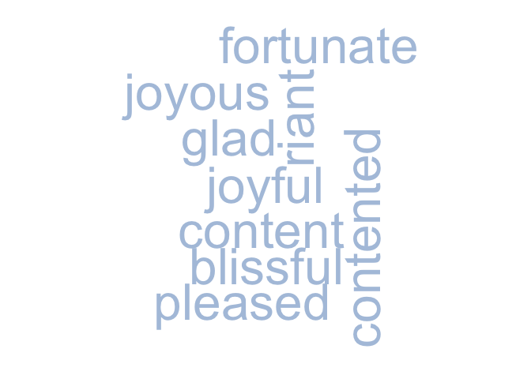

Overview
The goal of rhymer is to get rhyming and other related words through the Datamuse API. This package includes basic functions to get rhymes and other similar words based on meaning, spelling, or sound.
Installation
install.packages("rhymer")
# Or the the development version from GitHub:
# install.packages("devtools")
devtools::install_github("landesbergn/rhymer")Example
They say nothing rhymes with orange…
get_rhyme("orange", return_type = "word")
#> [1] "door hinge"Feeling down? How about this cloud of words with similar meaning to happy:
word_data <- get_means_like("happy", return_type = "df")
wordcloud::wordcloud(words = word_data$word,
freq = word_data$score,
colors = c("lightsteelblue1","lightsteelblue2","lightsteelblue3","lightsteelblue"))
#> Warning in wordcloud::wordcloud(words = word_data$word, freq = word_data$score,
#> : euphoric could not be fit on page. It will not be plotted.Eminem wrote the classic rap song ‘Lose Yourself’, but could it be better with rhymer?
glue::glue("
His palms are sweaty
Knees weak arms are {get_rhyme('sweaty', return_type = 'word', num_syl = 2)}
There's vomit on his sweater already
Mom's {get_rhyme('already', return_type = 'word', num_syl = 3)}
")
#> His palms are sweaty
#> Knees weak arms are petty
#>
#> There's vomit on his sweater already
#> Mom's unsteadyMain functions
rhymer has 4 main functions that allow you to get data on related words through the Datamuse API.
They are:
-
get_rhyme()- a function to get rhyming words
-
get_means_like()- a function to get words with similar meaning
-
get_sounds_like()- a function to get words that sound similar
-
get_spelled_like()- a function to get words that are spelled similarly
There is also a more flexible function get_other_related() that allows you to use the API to get data on other related words using a series of ‘codes’ described on the Datamuse API website.
Each function takes the basic arguments of:
-
wordthe word to base results on
-
return_typewhat type of data return (options are df for a data frame, vector for a vector, word for a single word, and random_word for a random word)
-
limitmax number of related words to return
get_rhyme() and get_sounds_like() also have special helpers for the number of syllables to return called num_syl.